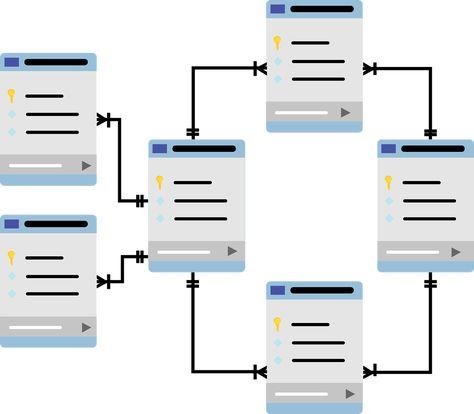

Kimberly Reyes
Estudiante de Ciencias de la Computación
Soy Kimberly Matilde Reyes Guillen, tengo 20 años y nací en el pueblo de Silca, Olancho en Honduras. Actualmente estudio la carrera de Ingeniería en Ciencias de la Computación en la Universidad Católica de Honduras (UNICAH). Me apasiona la tecnología y el aprendizaje constante.
Ver mis proyectosMis Habilidades

Bases de Datos
Me apasiona trabajar con bases de datos como SQLserver y MongoDB para organizar y gestionar información.

Diseño Web
Disfruto creando interfaces atractivas y responsivas que mejoran la experiencia del usuario.

Redes
Tengo interés en la configuración y administración de redes para garantizar una comunicación eficiente y segura.
Hardware
Se me es entretenido resolver problemas de computadoras.
Información de contacto
Teléfono: 95371550

Teléfono: Kimtrg2004@gmail.com